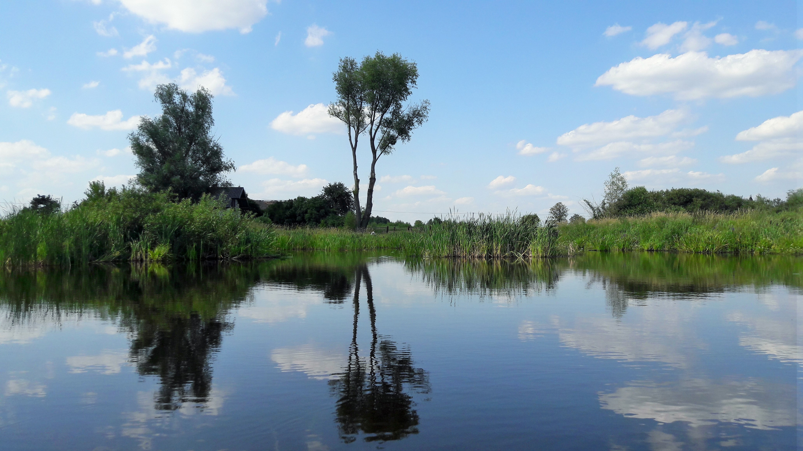
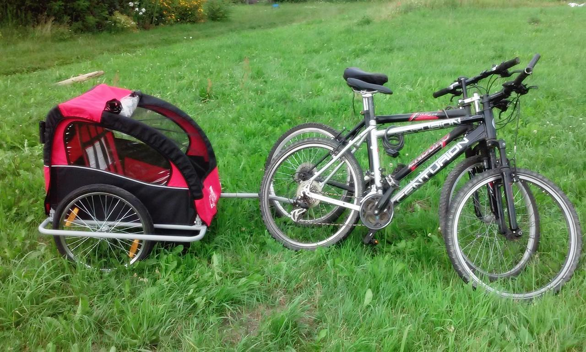
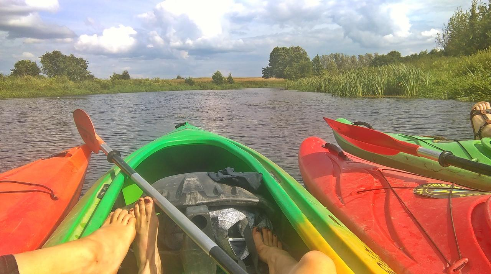
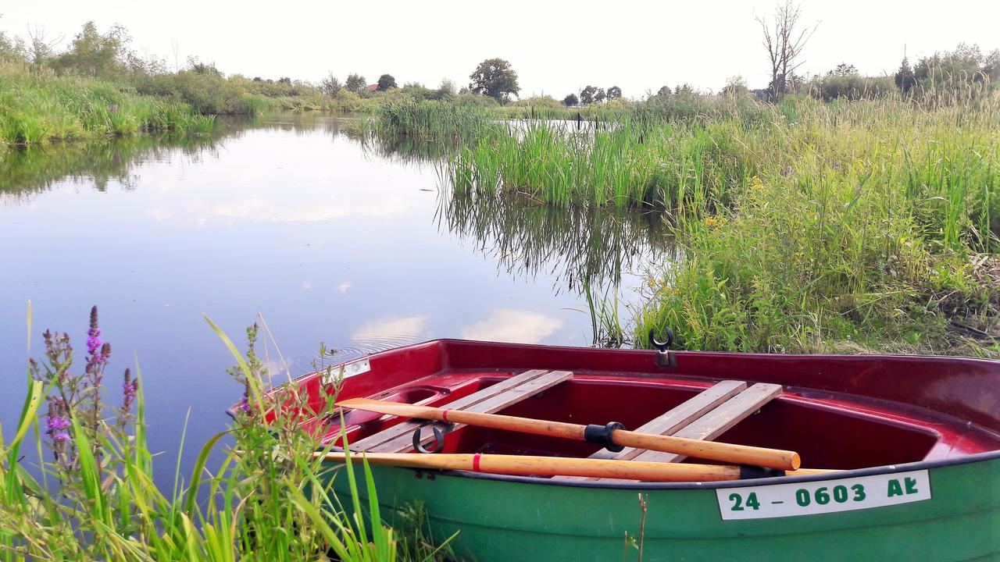
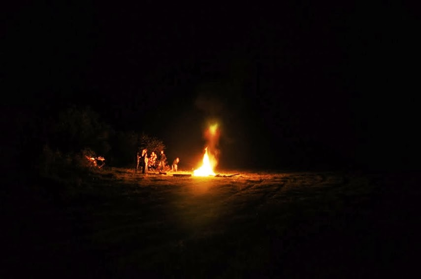

Atrakcje

×


Zapraszamy dzieci i dorosłych do nauki jazdy konnej. Spokojne konie i doświadczeni
instruktorzy czekają na Was, a otoczenie stawów, łąk, pól i lasów zachęca do spotkania.
×


Z okien domu widać piękne
stawy, które zamieszkuje licznie dzikie ptactwo. To istny raj dla miłośników ptaków.
×


Do dyspozycji mamy piękne i ciekawe ścieżki rowerowe
×


W pobliżu (15 min samochodem) znajduje się rzeka Wkra, która stanowi popularny szlak
kajakowy.
×


Wędkarze znajda tu niewątpliwe coś dla
siebie, między innymi dla nich oferujemy łódź wiosłową.
×

Wieczorami poza obserwacją gwiazd, zapraszamy do przygotowania smakołyków na ognisku i grillu.